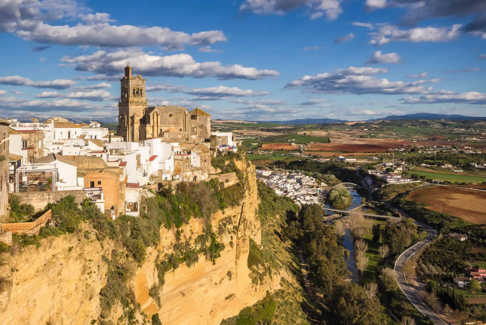
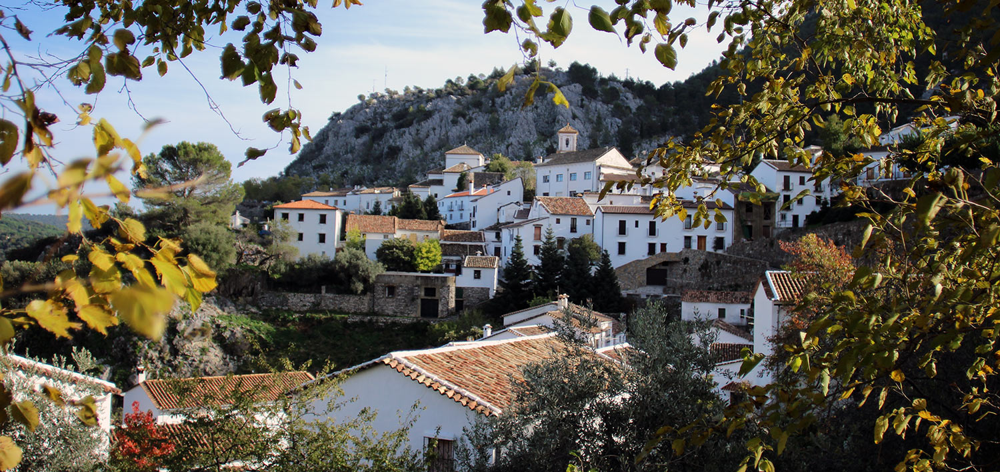
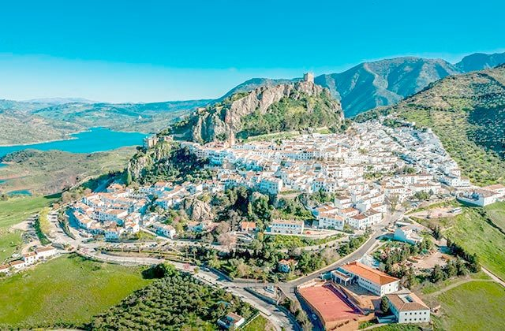

Pueblos Blancos

Arcos de la Frontera

Grazalema

Zahara de la Sierra

Puerto Serrano
Los Pueblos Blancos de Cádiz son conocidos por sus casas encaladas, su historia y su gastronomía.
| Pueblo | Habitantes | Altitud |
|---|---|---|
| Arcos de la Frontera | 31.000 | 185 m |
| Grazalema | 2.000 | 812 m |
| Zahara de la Sierra | 1.400 | 500 m | Puerto Serrano | 7.000 | 160 m |
Más información sobre los Pueblos Blancos en Cádiz Turismo.